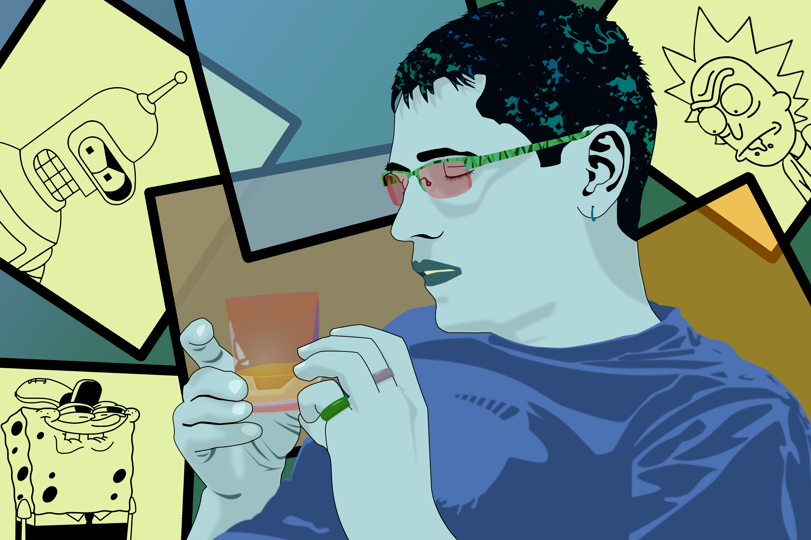

אלכסנדר נזין
דף פרופיל

דף הבית
אודות
השכלה
תחום העיסוק
תחביבים
שונות
שירות צבאי
שפות
יישומי מחשב
צור קשר
תחום העיסוק
2015-היום
מנהל פיתוח, אומני החשיבה בע''מ – חברת הדרכת תוכניות העשרה.
בניית תוכניות לימוד שנתיות.
כתיבת מערכי שיעור בנושאי מדע, בישול, משחקי חשיבה, אינג'ינו.
פיתוח תכנים חדשים בעבור חוגי העשרה שונים.
פיתוח של סדנאות וההפעלות מיוחדות.